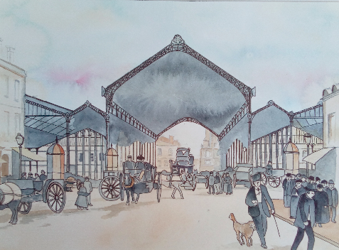

La Halle du marché des capucins a été réalisée en 1878. Elle est composée de deux Halles à partir d'éléments de structures métalliques rachetées à l'issue de l'esposition universelle de Paris. une grande gallerie centrale relie alors les deux halles. Le tram qui dessert alors le quartier circule dans cette galerie.